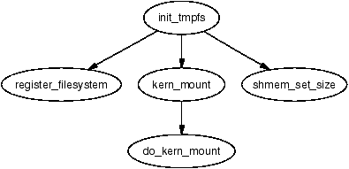
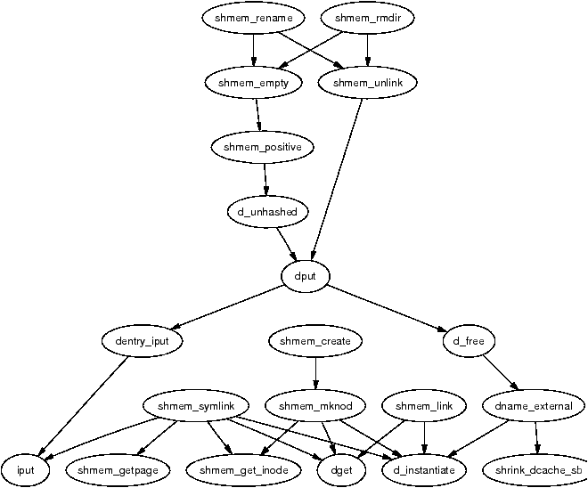
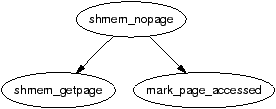
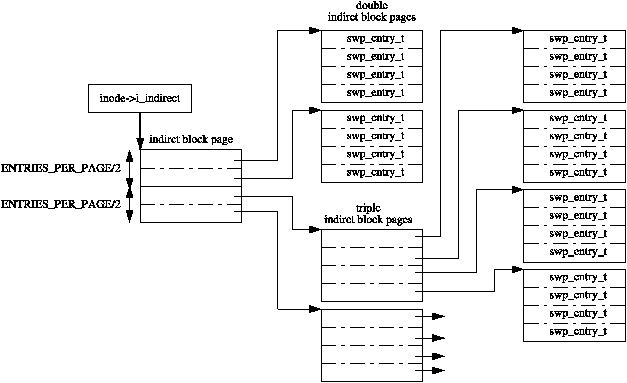
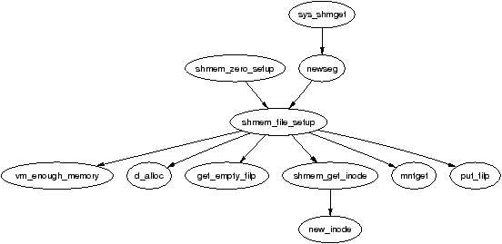
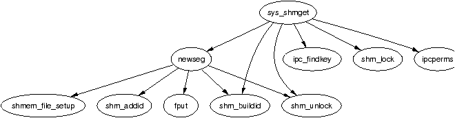

Sharing a region region of memory backed by a file or device is simply a case of calling mmap() with the MAP_SHARED flag. However, there are two important cases where an anonymous region needs to be shared between processes. The first is when mmap() with MAP_SHARED but no file backing. These regions will be shared between a parent and child process after a fork() is executed. The second is when a region is explicitly setting them up with shmget() and attached to the virtual address space with shmat().
When pages within a VMA are backed by a file on disk, the interface used is straight-forward. To read a page during a page fault, the required nopage() function is found vm_area_struct→vm_ops. To write a page to backing storage, the appropriate writepage() function is found in the address_space_operations via inode→i_mapping→a_ops or alternatively via page→mapping→a_ops. When normal file operations are taking place such as mmap(), read() and write(), the struct file_operations with the appropriate functions is found via inode→i_fop and so on. These relationships were illustrated in Figure 4.2.
This is a very clean interface that is conceptually easy to understand but it does not help anonymous pages as there is no file backing. To keep this nice interface, Linux creates an artifical file-backing for anonymous pages using a RAM-based filesystem where each VMA is backed by a “file” in this filesystem. Every inode in the filesystem is placed on a linked list called shmem_inodes so that they may always be easily located. This allows the same file-based interface to be used without treating anonymous pages as a special case.
The filesystem comes in two variations called shm and tmpfs. They both share core functionality and mainly differ in what they are used for. shm is for use by the kernel for creating file backings for anonymous pages and for backing regions created by shmget(). This filesystem is mounted by kern_mount() so that it is mounted internally and not visible to users. tmpfs is a temporary filesystem that may be optionally mounted on /tmp/ to have a fast RAM-based temporary filesystem. A secondary use for tmpfs is to mount it on /dev/shm/. Processes that mmap() files in the tmpfs filesystem will be able to share information between them as an alternative to System V IPC mechanisms. Regardless of the type of use, tmpfs must be explicitly mounted by the system administrator.
This chapter begins with a description of how the virtual filesystem is implemented. From there we will discuss how shared regions are setup and destroyed before talking about how the tools are used to implement System V IPC mechanisms.
The virtual filesystem is initialised by the function init_tmpfs() during either system start or when the module is begin loaded. This function registers the two filesystems, tmpfs and shm, mounts shm as an internal filesystem with kern_mount(). It then calculates the maximum number of blocks and inodes that can exist in the filesystems. As part of the registration, the function shmem_read_super() is used as a callback to populate a struct super_block with more information about the filesystems such as making the block size equal to the page size.

Figure 12.1: Call Graph: init_tmpfs()
Every inode created in the filesystem will have a struct shmem_inode_info associated with it which contains private information specific to the filesystem. The function SHMEM_I() takes an inode as a parameter and returns a pointer to a struct of this type. It is declared as follows in <linux/shmem_fs.h>:
20 struct shmem_inode_info {
21 spinlock_t lock;
22 unsigned long next_index;
23 swp_entry_t i_direct[SHMEM_NR_DIRECT];
24 void **i_indirect;
25 unsigned long swapped;
26 unsigned long flags;
27 struct list_head list;
28 struct inode *inode;
29 };
The fields are:
Different structs contain pointers for shmem specific functions. In all cases, tmpfs and shm share the same structs.
For faulting in pages and writing them to backing storage, two structs called shmem_aops and shmem_vm_ops of type struct address_space_operations and struct vm_operations_struct respectively are declared.
The address space operations struct shmem_aops contains pointers to a small number of functions of which the most important one is shmem_writepage() which is called when a page is moved from the page cache to the swap cache. shmem_removepage() is called when a page is removed from the page cache so that the block can be reclaimed. shmem_readpage() is not used by tmpfs but is provided so that the sendfile() system call my be used with tmpfs files. shmem_prepare_write() and shmem_commit_write() are also unused, but are provided so that tmpfs can be used with the loopback device. shmem_aops is declared as follows in mm/shmem.c
1500 static struct address_space_operations shmem_aops = {
1501 removepage: shmem_removepage,
1502 writepage: shmem_writepage,
1503 #ifdef CONFIG_TMPFS
1504 readpage: shmem_readpage,
1505 prepare_write: shmem_prepare_write,
1506 commit_write: shmem_commit_write,
1507 #endif
1508 };
Anonymous VMAs use shmem_vm_ops as it's vm_operations_struct so that shmem_nopage() is called when a new page is being faulted in. It is declared as follows:
1426 static struct vm_operations_struct shmem_vm_ops = {
1427 nopage: shmem_nopage,
1428 };
To perform operations on files and inodes, two structs, file_operations and inode_operations are required. The file_operations, called shmem_file_operations, provides functions which implement mmap(), read(), write() and fsync(). It is declared as follows:
1510 static struct file_operations shmem_file_operations = {
1511 mmap: shmem_mmap,
1512 #ifdef CONFIG_TMPFS
1513 read: shmem_file_read,
1514 write: shmem_file_write,
1515 fsync: shmem_sync_file,
1516 #endif
1517 };
Three sets of inode_operations are provided. The first is shmem_inode_operations which is used for file inodes. The second, called shmem_dir_inode_operations is for directories. The last pair, called shmem_symlink_inline_operations and shmem_symlink_inode_operations is for use with symbolic links.
The two file operations supported are truncate() and setattr() which are stored in a struct inode_operations called shmem_inode_operations. shmem_truncate() is used to truncate a file. shmem_notify_change() is called when the file attributes change. This allows, amoung other things, to allows a file to be grown with truncate() and use the global zero page as the data page. shmem_inode_operations is declared as follows:
1519 static struct inode_operations shmem_inode_operations = {
1520 truncate: shmem_truncate,
1521 setattr: shmem_notify_change,
1522 };
The directory inode_operations provides functions such as create(), link() and mkdir(). They are declared as follows:
1524 static struct inode_operations shmem_dir_inode_operations = {
1525 #ifdef CONFIG_TMPFS
1526 create: shmem_create,
1527 lookup: shmem_lookup,
1528 link: shmem_link,
1529 unlink: shmem_unlink,
1530 symlink: shmem_symlink,
1531 mkdir: shmem_mkdir,
1532 rmdir: shmem_rmdir,
1533 mknod: shmem_mknod,
1534 rename: shmem_rename,
1535 #endif
1536 };
The last pair of operations are for use with symlinks. They are declared as:
1354 static struct inode_operations shmem_symlink_inline_operations = {
1355 readlink: shmem_readlink_inline,
1356 follow_link: shmem_follow_link_inline,
1357 };
1358
1359 static struct inode_operations shmem_symlink_inode_operations = {
1360 truncate: shmem_truncate,
1361 readlink: shmem_readlink,
1362 follow_link: shmem_follow_link,
1363 };
The difference between the two readlink() and follow_link() functions is related to where the link information is stored. A symlink inode does not require the private inode information struct shmem_inode_information. If the length of the symbolic link name is smaller than this struct, the space in the inode is used to store the name and shmem_symlink_inline_operations becomes the inode operations struct. Otherwise a page is allocated with shmem_getpage(), the symbolic link is copied to it and shmem_symlink_inode_operations is used. The second struct includes a truncate() function so that the page will be reclaimed when the file is deleted.
These various structs ensure that the shmem equivalent of inode related operations will be used when regions are backed by virtual files. When they are used, the majority of the VM sees no difference between pages backed by a real file and ones backed by virtual files.
As tmpfs is mounted as a proper filesystem that is visible to the user, it must support directory inode operations such as open(), mkdir() and link(). Pointers to functions which implement these for tmpfs are provided in shmem_dir_inode_operations which was shown in Section 12.2.
The implementations of most of these functions are quite small and, at some level, they are all interconnected as can be seen from Figure 12.2. All of them share the same basic principal of performing some work with inodes in the virtual filesystem and the majority of the inode fields are filled in by shmem_get_inode().

Figure 12.2: Call Graph: shmem_create()
When creating a new file, the top-level function called is shmem_create(). This small function calls shmem_mknod() with the S_IFREG flag added so that a regular file will be created. shmem_mknod() is little more than a wrapper around the shmem_get_inode() which, predictably, creates a new inode and fills in the struct fields. The three fields of principal interest that are filled are the inode→i_mapping→a_ops, inode→i_op and inode→i_fop fields. Once the inode has been created, shmem_mknod() updates the directory inode size and mtime statistics before instantiating the new inode.
Files are created differently in shm even though the filesystems are essentially identical in functionality. How these files are created is covered later in Section 12.7.
When a page fault occurs, do_no_page() will call vma→vm_ops→nopage if it exists. In the case of the virtual filesystem, this means the function shmem_nopage(), whose call graph is shown in Figure 12.3, will be called when a page fault occurs.

Figure 12.3: Call Graph: shmem_nopage()
The core function in this case is shmem_getpage() which is responsible for either allocating a new page or finding it in swap. This overloading of fault types is unusual as do_swap_page() is normally responsible for locating pages that have been moved to the swap cache or backing storage using information encoded within the PTE. In this case, pages backed by virtual files have their PTE set to 0 when they are moved to the swap cache. The inode's private filesystem data stores direct and indirect block information which is used to locate the pages later. This operation is very similar in many respects to normal page faulting.
When a page has been swapped out, a swp_entry_t will contain information needed to locate the page again. Instead of using the PTEs for this task, the information is stored within the filesystem-specific private information in the inode.
When faulting, the function called to locate the swap entry is shmem_alloc_entry(). It's basic task is to perform basic checks and ensure that shmem_inode_info→next_index always points to the page index at the end of the virtual file. It's principal task is to call shmem_swp_entry() which searches for the swap vector within the inode information with shmem_swp_entry() and allocate new pages as necessary to store swap vectors.
The first SHMEM_NR_DIRECT entries are stored in inode→i_direct. This means that for the x86, files that are smaller than 64KiB (SHMEM_NR_DIRECT * PAGE_SIZE) will not need to use indirect blocks. Larger files must use indirect blocks starting with the one located at inode→i_indirect.

Figure 12.4: Traversing Indirect Blocks in a Virtual File
The initial indirect block (inode→i_indirect) is broken into two halves. The first half contains pointers to doubly indirect blocks and the second half contains pointers to triply indirect blocks. The doubly indirect blocks are pages containing swap vectors (swp_entry_t). The triple indirect blocks contain pointers to pages which in turn are filled with swap vectors. The relationship between the different levels of indirect blocks is illustrated in Figure 12.4. The relationship means that the maximum number of pages in a virtual file (SHMEM_MAX_INDEX) is defined as follows in mm/shmem.c:
44 #define SHMEM_MAX_INDEX (
SHMEM_NR_DIRECT +
(ENTRIES_PER_PAGEPAGE/2) *
(ENTRIES_PER_PAGE+1))
The function shmem_writepage() is the registered function in the filesystems address_space_operations for writing pages to swap. The function is responsible for simply moving the page from the page cache to the swap cache. This is implemented with a few simple steps:
Four operations, mmap(), read(), write() and fsync() are supported with virtual files. Pointers to the functions are stored in shmem_file_operations which was shown in Section 12.2.
There is little that is unusual in the implementation of these operations and they are covered in detail in the Code Commentary. The mmap() operation is implemented by shmem_mmap() and it simply updates the VMA that is managing the mapped region. read(), implemented by shmem_read(), performs the operation of copying bytes from the virtual file to a userspace buffer, faulting in pages as necessary. write(), implemented by shmem_write() is essentially the same. The fsync() operation is implemented by shmem_file_sync() but is essentially a NULL operation as it performs no task and simply returns 0 for success. As the files only exist in RAM, they do not need to be synchronised with any disk.
The most complex operation that is supported for inodes is truncation and involves four distinct stages. The first, in shmem_truncate() will truncate the a partial page at the end of the file and continually calls shmem_truncate_indirect() until the file is truncated to the proper size. Each call to shmem_truncate_indirect() will only process one indirect block at each pass which is why it may need to be called multiple times.
The second stage, in shmem_truncate_indirect(), understands both doubly and triply indirect blocks. It finds the next indirect block that needs to be truncated. This indirect block, which is passed to the third stage, will contain pointers to pages which in turn contain swap vectors.
The third stage in shmem_truncate_direct() works with pages that contain swap vectors. It selects a range that needs to be truncated and passes the range to the last stage shmem_swp_free(). The last stage frees entries with free_swap_and_cache() which frees both the swap entry and the page containing data.
The linking and unlinking of files is very simple as most of the work is performed by the filesystem layer. To link a file, the directory inode size is incremented, the ctime and mtime of the affected inodes is updated and the number of links to the inode being linked to is incremented. A reference to the new dentry is then taken with dget() before instantiating the new dentry with d_instantiate(). Unlinking updates the same inode statistics before decrementing the reference to the dentry with dput(). dput() will also call iput() which will clear up the inode when it's reference count hits zero.
Creating a directory will use shmem_mkdir() to perform the task. It simply uses shmem_mknod() with the S_IFDIR flag before incrementing the parent directory inode's i_nlink counter. The function shmem_rmdir() will delete a directory by first ensuring it is empty with shmem_empty(). If it is, the function then decrementing the parent directory inode's i_nlink count and calls shmem_unlink() to remove the requested directory.
A shared region is backed by a file created in shm. There are two cases where a new file will be created, during the setup of a shared region with shmget() and when an anonymous region is setup with mmap() with the MAP_SHARED flag. Both functions use the core function shmem_file_setup() to create a file.

Figure 12.5: Call Graph: shmem_zero_setup()
As the filesystem is internal, the names of the files created do not have to be unique as the files are always located by inode, not name. Therefore, shmem_zero_setup() always says to create a file called dev/zero which is how it shows up in the file /proc/pid/maps. Files created by shmget() are called SYSVNN where the NN is the key that is passed as a parameter to shmget().
The core function shmem_file_setup() simply creates a new dentry and inode, fills in the relevant fields and instantiates them.
The full internals of the IPC implementation is beyond the scope of this book. This section will focus just on the implementations of shmget() and shmat() and how they are affected by the VM. The system call shmget() is implemented by sys_shmget(). It performs basic checks to the parameters and sets up the IPC related data structures. To create the segment, it calls newseg(). This is the function that creates the file in shmfs with shmem_file_setup() as discussed in the previous section.

Figure 12.6: Call Graph: sys_shmget()
The system call shmat() is implemented by sys_shmat(). There is little remarkable about the function. It acquires the appropriate descriptor and makes sure all the parameters are valid before calling do_mmap() to map the shared region into the process address space. There are only two points of note in the function.
The first is that it is responsible for ensuring that VMAs will not overlap if the caller specifies the address. The second is that the shp→shm_nattch counter is maintained by a vm_operations_struct() called shm_vm_ops. It registers open() and close() callbacks called shm_open() and shm_close() respectively. The shm_close() callback is also responsible for destroyed shared regions if the SHM_DEST flag is specified and the shm_nattch counter reaches zero.
The core concept and functionality of the filesystem remains the same and the changes are either optimisations or extensions to the filesystem's functionality. If the reader understands the 2.4 implementation well, the 2.6 implementation will not present much trouble1.
A new fields have been added to the shmem_inode_info called alloced. The alloced field stores how many data pages are allocated to the file which had to be calculated on the fly in 2.4 based on inode→i_blocks. It both saves a few clock cycles on a common operation as well as making the code a bit more readable.
The flags field now uses the VM_ACCOUNT flag as well as the VM_LOCKED flag. The VM_ACCOUNT, always set, means that the VM will carefully account for the amount of memory used to make sure that allocations will not fail.
Extensions to the file operations are the ability to seek with the system call _llseek(), implemented by generic_file_llseek() and to use sendfile() with virtual files, implemented by shmem_file_sendfile(). An extension has been added to the VMA operations to allow non-linear mappings, implemented by shmem_populate().
The last major change is that the filesystem is responsible for the allocation and destruction of it's own inodes which are two new callbacks in struct super_operations. It is simply implemented by the creation of a slab cache called shmem_inode_cache. A constructor function init_once() is registered for the slab allocator to use for initialising each new inode.